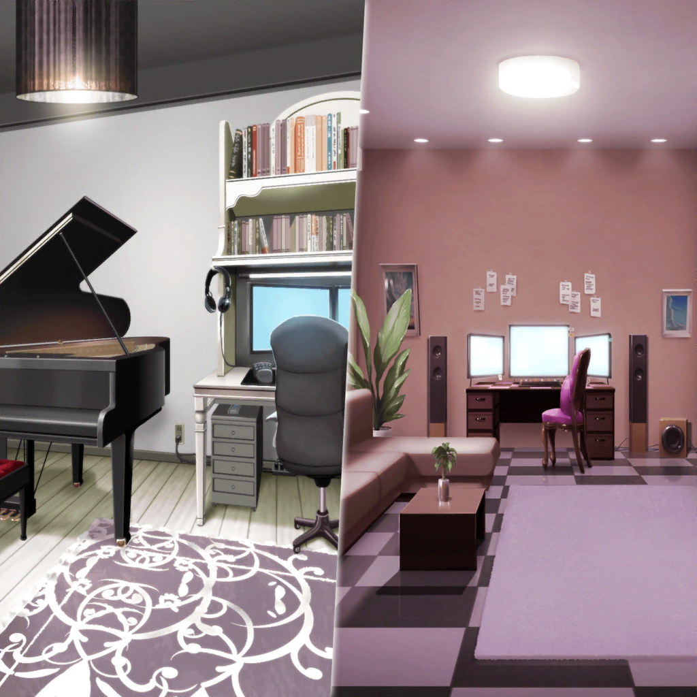

帰り道
リサ
……
紗夜
……あの、今井さん……？
リサ
あ、うん……なんか、アタシっぽくないよね。ごめん
リサ
なんか、アタシ……何してたんだろうって思ってさ。
みんなよりも演奏は下手だから、少しでも役に立てること
考えてさ
リサ
みんながいい感じに演奏できるようにって色々やってたのに、
全部、Roseliaの為になってなかったんだよね
リサ
友希那の夢が叶うように、ってやってたのに……
リサ
……っ
紗夜
……あなたは、Roseliaのベーシストです
リサ
え……？
紗夜
技術は足りていませんが、私はあなたをベーシストとして
認めています。あなたの存在意義は、
ちゃんとこのバンドにあります
リサ
紗夜……っ！ はあ、もう……優しいなあ。
けどさ、これからどうしていったらいいんだろう？
紗夜
緊張感のある私達の音……たしかに、これは取り戻すべきですね。
ですが、今よりも未熟だった頃に戻る必要はないはず
リサ
うん。そう、だよね……？
友希那だってこんな形で取り戻したいなんて、
本気で思ってないよね？
リサ
あこや燐子達に言ったことだって、本心じゃないはず……
アタシ、友希那にもう一度話を聞いてみようかな？
あこ達のことも気になるし……
紗夜
……今井さん。それでは今と変わらないじゃない。
私達は、変わらなければならないのよ
リサ
だ、だってさ〜……やっぱり、みんなのこと心配だし。
アタシ、今までみんなの間、取り持ってたじゃん？
紗夜
あなたがこのバンドの精神的な支柱になっているのは確かだけど、
だからって、全部のトラブルをあなたが引き受けることはないわ
紗夜
むしろ……その状態が、バンド全体を甘やかして
いた可能性も……
リサ
う〜……ホント、アタシってどこまでおせっかいなんだろ。
全部ダメダメだよね？
紗夜
精神的支柱としてのあり方は考えるべきだと思うけれど、
何もかもがダメだったわけではないと思いますよ
リサ
紗夜、なんかホント変わったよね。
まさか紗夜にこんな風に言われるなんてな〜……
紗夜
変われた一因には、あなたも含まれているのよ。
だからこそ、ダメだなんて言わないでほしいだけ
紗夜
この問題は、あなただけに任せることじゃない。
全員がそれぞれ向き合わなくては、
Roseliaを取り戻すことはできない
リサ
うん、そうだね……！
紗夜、ホントにありがと
紗夜
まだ、何も始まってないわよ
リサ
それでも言わせてよ！ 紗夜がいなかったらアタシ、
もっとボロボロだったと思うし
リサ
（考えなくちゃ。アタシなりの向き合い方。
アタシがここにいる理由……）

白金家／宇田川家
あこ・燐子
『はあ〜……』
あこ
『あ……』
燐子
『かぶっちゃった、ね……』
あこ
『今日のあこ、最低最悪だったと思う……
急に大きい声出したり、飛び出して行ったり……』
あこ
『何やってるんだろ……』
燐子
『それは……わたしも同じだよ……』
あこ
『えっ、りんりんも？』
燐子
『あこちゃんが飛び出していったあと……
わたしも……つい、大きな声を出して……
出て行っちゃったの……』
あこ
『りんりん、そんなことしたんだ……』
燐子
『はあ……反省、しなくちゃ……』
あこ
『でもね、今のRoseliaってなんかヘンだと思う。
友希那さん、どうして急にあんな厳しくなったのかな……』
燐子
『あこちゃんがね、『こんなのRoseliaじゃない』って
言った時に思ったの……』
燐子
『Roseliaって、なんだろう？ って……』
あこ
『Roseliaは超、超、超カッコイイバンドだもん！！！
だからね、SMSでお客さんが帰っちゃった時、
すごく悔しかった！』
あこ
『こんなにカッコイイバンドなのに、どうして
誰も聴いてくれないの？ って』
燐子
『……友希那さんやみんなも……同じこと、考えてるのかな？』
あこ
『どうして聴いてくれないのか、って？』
燐子
『ううん、そうじゃなくて……SMSの結果……
どういう風に受け止めているのかな、って……』
燐子
『SMSのあとの練習……空気が違っただけじゃなくて……
演奏も違う風に聴こえたんだ……』
あこ
『それって、うまく演奏できなかったからかな……』
燐子
『それもあるかもしれないけど……なんだか……
みんなが違ったことを考えているような感じに聴こえて……』
燐子
『わたし達……FUTURE WORLD FES.っていう
大きな目標はあるけど……』
燐子
『それだけで、本当に……同じ方向を向いているのかな……』